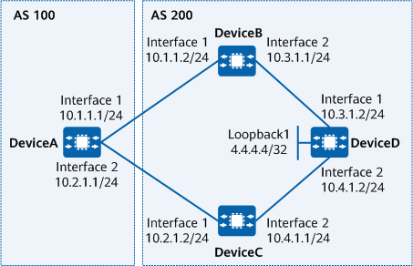

Example for Configuring BGP Auto FRR
Networking Requirements
As networks continue to develop, services, such as voice, online video, and financial services, pose higher requirements for real-time transmission. Primary and backup links are typically deployed on a network to ensure the stability of these services. If the primary link fails, a routing device must wait for route convergence to be completed, after which the routing device reselects an optimal route and delivers it to the FIB table to start a link switchover. This is the traditional switchover mode, during which extended service interruption occurs, resulting in a failure to meet service requirements.
BGP Auto FRR addresses this problem by using a routing device to select the optimal route to forward packets. In addition, the routing device automatically adds information about the sub-optimal route to the backup forwarding entries of the optimal route and delivers the backup forwarding entries to the FIB table. If the primary link fails, the routing device quickly switches traffic to the backup link. The switchover does not depend on route convergence and can be performed within sub-seconds, greatly reducing service interruption time.
As shown in Figure 1, DeviceA is located in AS 100, and DeviceB, DeviceC, and DeviceD are located in AS 200. BGP Auto FRR must be configured to ensure that the route from DeviceA to DeviceD has the backup route.

In this example, interface 1 and interface 2 represent 10GE 0/0/1 and 10GE 0/0/2, respectively.
In this example, interface 1 and interface 2 represent VLANIF100 and VLANIF200, respectively.

To complete the configuration, you need the following data:
Router IDs and AS numbers of DeviceA, DeviceB, DeviceC, and DeviceD
Names of route-policies and MED values of routes on DeviceB and DeviceC
Precautions
During the configuration, note the following:
To implement BGP Auto FRR, at least two routes to the same destination network segment must be available.
When applying a route-policy, ensure that the route-policy name is case sensitive.
- To improve security, you are advised to deploy BGP security measures. For details, see "Configuring BGP Authentication." Keychain authentication is used as an example. For details, see Example for Configuring Keychain Authentication for BGP.
Configuration Roadmap
The configuration roadmap is as follows:
Establish EBGP connections between DeviceA and DeviceB, and between DeviceA and DeviceC. Establish IBGP connections between DeviceD and DeviceB, and between DeviceD and DeviceC.
Configure route-policies on DeviceB and DeviceC to change the MED values of routes to DeviceD for route selection.
Configure BGP Auto FRR on DeviceA.
Procedure
- Assign an IP address to each interface. For detailed configurations, see Configuration Scripts.
- Configure EBGP connections between DeviceA and DeviceB and between DeviceA and DeviceC, and configure IBGP connections between DeviceB and DeviceD, and between DeviceC and DeviceD.
# Establish EBGP connections on DeviceA.
<DeviceA> system-view [DeviceA] bgp 100 [DeviceA-bgp] router-id 1.1.1.1 [DeviceA-bgp] peer 10.1.1.2 as-number 200 [DeviceA-bgp] peer 10.2.1.2 as-number 200 [DeviceA-bgp] quit
The configurations on DeviceB and DeviceC are similar to the configuration on DeviceA.
# Establish IBGP connections on DeviceD.
<DeviceD> system-view [DeviceD] bgp 200 [DeviceD-bgp] router-id 4.4.4.4 [DeviceD-bgp] peer 10.3.1.1 as-number 200 [DeviceD-bgp] peer 10.4.1.1 as-number 200 [DeviceD-bgp] quit
The configurations on DeviceB and DeviceC are similar to the configuration on DeviceD.
- Configure BFD for BGP on DeviceA, DeviceB, DeviceC and DeviceD.
# Configure BFD for BGP on DeviceA.
[DeviceA] bfd [DeviceA-bfd] quit [DeviceA] bgp 100 [DeviceA-bgp] peer 10.1.1.2 bfd enable [DeviceA-bgp] peer 10.1.1.2 bfd min-tx-interval 100 min-rx-interval 100 detect-multiplier 4 [DeviceA-bgp] peer 10.2.1.2 bfd enable [DeviceA-bgp] peer 10.2.1.2 bfd min-tx-interval 100 min-rx-interval 100 detect-multiplier 4 [DeviceA-bgp] quit
The configurations on DeviceB, DeviceC and DeviceD are similar to the configuration on DeviceA.
- Configure route-policies on DeviceB and DeviceC to ensure that the MED values of routes to DeviceD are different.
# Configure a route-policy on DeviceB.
<DeviceB> system-view [DeviceB] route-policy rtb permit node 10 [DeviceB-route-policy] apply cost 80 [DeviceB-route-policy] quit [DeviceB] bgp 200 [DeviceB-bgp] ipv4-family unicast [DeviceB-bgp-af-ipv4] peer 10.1.1.1 route-policy rtb export [DeviceB-bgp-af-ipv4] quit [DeviceB-bgp] quit
# Configure a route-policy on DeviceC.
<DeviceC> system-view [DeviceC] route-policy rtc permit node 10 [DeviceC-route-policy] apply cost 120 [DeviceC-route-policy] quit [DeviceC] bgp 200 [DeviceC-bgp] ipv4-family unicast [DeviceC-bgp-af-ipv4] peer 10.2.1.1 route-policy rtc export [DeviceC-bgp-af-ipv4] quit [DeviceC-bgp] quit
# Configure DeviceD to advertise a route destined for 4.4.4.4/32.
[DeviceD] bgp 200 [DeviceD-bgp] ipv4-family unicast [DeviceD-bgp] network 4.4.4.4 32 [DeviceD-bgp] quit
# Run the display ip routing-table verbose command on DeviceA to check detailed information about the learned route destined for 4.4.4.4/32.
[DeviceA] display ip routing-table 4.4.4.4 32 verbose Route Flags: R - relay, D - download to fib, T - to vpn-instance, B - black hole route ------------------------------------------------------------------------------ Routing Table : _public_ Summary Count : 1 Destination: 4.4.4.4/32 Protocol: EBGP Process ID: 0 Preference: 255 Cost: 80 NextHop: 10.1.1.2 Neighbour: 10.1.1.2 State: Active Adv Age: 00h00m12s Tag: 0 Priority: low Label: NULL QoSInfo: 0x0 IndirectID: 0x4 RelayNextHop: 0.0.0.0 Interface: 10GE0/0/1 TunnelID: 0x0 Flags: D
As the MED value of the route learned from DeviceB is smaller, DeviceA selects the path DeviceA -> DeviceB -> DeviceD to transmit traffic to 4.4.4.4/32. However, as FRR has not yet been configured, no information about the backup route is available.
- Enable BGP Auto FRR.
# Configure DeviceA.
[DeviceA] bgp 100 [DeviceA-bgp] ipv4-family unicast [DeviceA-bgp-af-ipv4] auto-frr [DeviceA-bgp-af-ipv4] quit [DeviceA-bgp] quit
Verifying the Configuration
After completing the configuration, run the display ip routing-table verbose command on DeviceA to check the routing information.
[DeviceA] display ip routing-table 4.4.4.4 32 verbose Route Flags: R - relay, D - download to fib, T - to vpn-instance, B - black hole route ------------------------------------------------------------------------------ Routing Table : _public_ Summary Count : 1 Destination: 4.4.4.4/32 Protocol: EBGP Process ID: 0 Preference: 255 Cost: 80 NextHop: 10.1.1.2 Neighbour: 10.1.1.2 State: Active Adv Age: 00h52m45s Tag: 0 Priority: low Label: NULL QoSInfo: 0x0 IndirectID: 0x4 RelayNextHop: 0.0.0.0 Interface: 10GE0/0/1 TunnelID: 0x0 Flags: D BkNextHop: 10.2.1.2 BkInterface: 10GE0/0/2 BkLabel: NULL SecTunnelID: 0x0 BkPETunnelID: 0x0 BkPESecTunnelID: 0x0 BkIndirectID: 0x2
The command output shows that DeviceA has a backup next hop (10.2.1.2) for the route to 4.4.4.4/32 and the backup outbound interface is 10GE0/0/2.
Configuration Scripts
DeviceA
# sysname DeviceA # bfd # interface 10GE0/0/1 ip address 10.1.1.1 255.255.255.0 # interface 10GE0/0/2 ip address 10.2.1.1 255.255.255.0 # bgp 100 router-id 1.1.1.1 peer 10.1.1.2 as-number 200 peer 10.1.1.2 bfd min-tx-interval 100 min-rx-interval 100 detect-multiplier 4 peer 10.1.1.2 bfd enable peer 10.2.1.2 as-number 200 peer 10.2.1.2 bfd min-tx-interval 100 min-rx-interval 100 detect-multiplier 4 peer 10.2.1.2 bfd enable # ipv4-family unicast auto-frr peer 10.1.1.2 enable peer 10.2.1.2 enable # return
DeviceB
# sysname DeviceB # bfd # interface 10GE0/0/1 ip address 10.1.1.2 255.255.255.0 # interface 10GE0/0/2 ip address 10.3.1.1 255.255.255.0 # bgp 200 router-id 2.2.2.2 peer 10.1.1.1 as-number 100 peer 10.1.1.1 bfd min-tx-interval 100 min-rx-interval 100 detect-multiplier 4 peer 10.1.1.1 bfd enable peer 10.3.1.2 as-number 200 peer 10.3.1.2 bfd min-tx-interval 100 min-rx-interval 100 detect-multiplier 4 peer 10.3.1.2 bfd enable # ipv4-family unicast peer 10.1.1.1 route-policy rtb export peer 10.1.1.1 enable peer 10.3.1.2 enable # route-policy rtb permit node 10 apply cost 80 # return
DeviceC
# sysname DeviceC # bfd # interface 10GE0/0/1 ip address 10.2.1.2 255.255.255.0 # interface 10GE0/0/2 ip address 10.4.1.1 255.255.255.0 # bgp 200 router-id 3.3.3.3 peer 10.2.1.1 as-number 100 peer 10.2.1.1 bfd min-tx-interval 100 min-rx-interval 100 detect-multiplier 4 peer 10.2.1.1 bfd enable peer 10.4.1.2 as-number 200 peer 10.4.1.2 bfd min-tx-interval 100 min-rx-interval 100 detect-multiplier 4 peer 10.4.1.2 bfd enable # ipv4-family unicast peer 10.2.1.1 route-policy rtc export peer 10.2.1.1 enable peer 10.4.1.2 enable # route-policy rtc permit node 10 apply cost 120 # return
DeviceD
# sysname DeviceD # bfd # interface 10GE0/0/1 ip address 10.3.1.2 255.255.255.0 # interface 10GE0/0/2 ip address 10.4.1.2 255.255.255.0 # interface LoopBack1 ip address 4.4.4.4 255.255.255.255 # bgp 200 router-id 4.4.4.4 peer 10.3.1.1 as-number 200 peer 10.3.1.1 bfd min-tx-interval 100 min-rx-interval 100 detect-multiplier 4 peer 10.3.1.1 bfd enable peer 10.4.1.1 as-number 200 peer 10.4.1.1 bfd min-tx-interval 100 min-rx-interval 100 detect-multiplier 4 peer 10.4.1.1 bfd enable # ipv4-family unicast network 4.4.4.4 255.255.255.255 peer 10.3.1.1 enable peer 10.4.1.1 enable # return